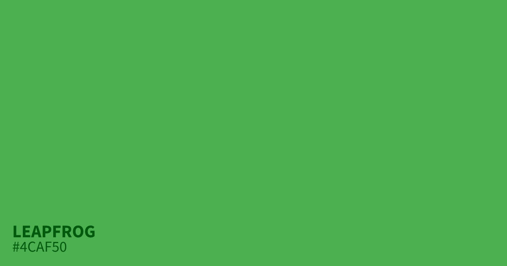
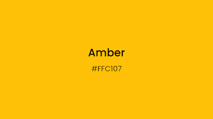
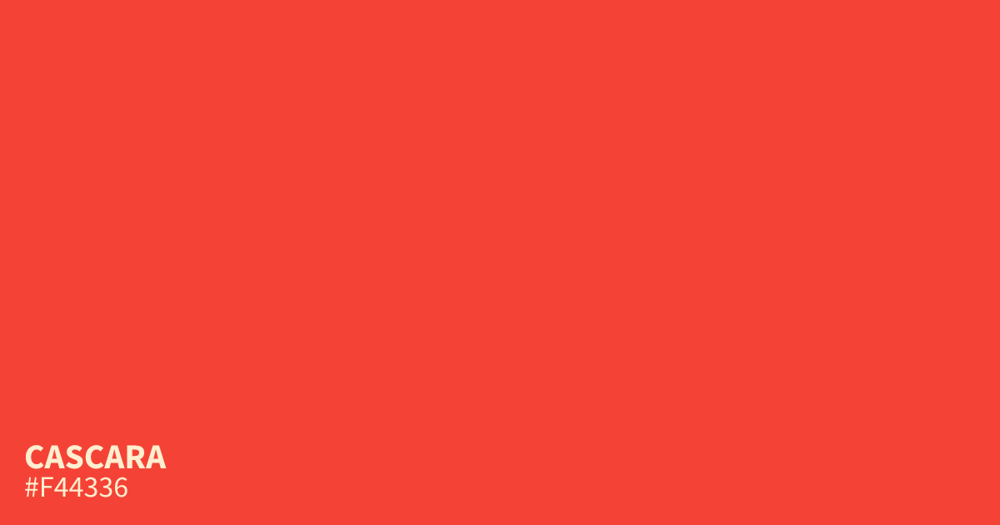
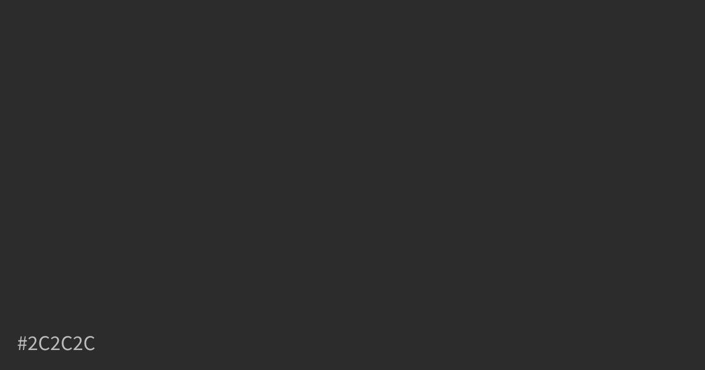
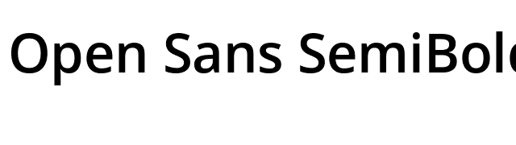
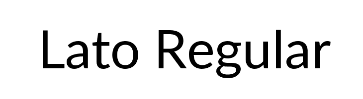
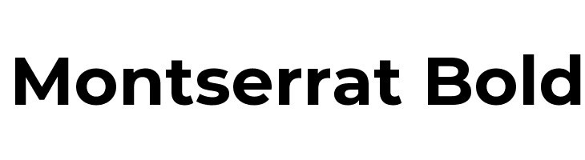
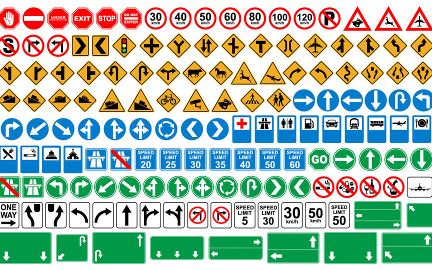

Crafting an Interactive, Road-Themed Learning and Portfolio Website”
The goal of this website is to seamlessly combine practical learning and portfolio presentation by using the driving manual theme as an interactive and engaging framework. The aesthetic will blend road safety and driving elements with a clean, modern design, creating a visually appealing yet educational experience. The website will guide users as if they are on a journey, using road signs and driving metaphors to structure content.
Visual Design Elements
- Colour Swatches:
• Traffic Light Green (#4CAF50) – Indicates positive feedback from interactions.
• Warning Yellow (#FFC107) - Highlights interactive elements like hyperlinks and buttons.
• Road Sign Red (#F44336) - Indicates important actions or errors.
• Asphalt Grey (#2C2C2C) - Creates a modern, grounded background which is also the colour of the road.
• White (#FFFFFF) - Enhances readability and provides contrast. - Typography:
• Headings: Roboto Bold - Strong and modern, mimicking road signage.
• Subheadings: Open Sans Semi-Bold - Clean and easily readable.
• Body Text: Lato Regular - Simple and clear for long passages.
Call to Action (CTA): Montserrat Bold - Emphasizes interactive buttons or links.

Final Design
- Homepage: An inviting welcome screen with a road-themed featured image and navigation styled as road signs.
- Blog Section: Road-map style layout with blog posts as signposts along the way.
- Design Section: Interactive design elements presented as road sign diagrams.
- Essays and Portfolio: Smooth flow with CTA buttons styled as road signs.
- Profile Page: Driver’s license style card with personal information and experience.

Interaction Points and User Flow
- Start Here (Homepage) → Journey to Learn (Blog Section)
o Interactive CTA button that acts as a “Start Your Journey” sign.
o Users scroll down a road-themed timeline of blog posts. - Portfolio Roadmap → Individual Project Stops
o Project links styled as destination markers.
o Users can click to view project details and screenshots. - Profile Navigation → Social and Contact Info
o Styled as a road network with interactive map markers.
Explore Designs (Design Section) → Wireframe Pit Stop
o Clickable signboards show different stages of the design process.
o Interactive roadmap graphic linking to style guides and sketches.
Visual Design Elements
- Road Sign Graphics: Custom SVG icons for navigation.
- Driving-Themed Background Patterns: Subtle road texture.
- Interactive Buttons: Styled like traffic lights or pedestrian crossings.
Page Dividers: Styled as road markings or lanes.
Inspirational References
- The Noun Project - Road Sign IconsLinks to an external site. - For clean SVG graphics.
- Dribbble - Road-Themed Website DesignsLinks to an external site. - For design inspiration.
- Behance - Interactive WebsitesLinks to an external site. - To explore interaction ideas.
Reflection on Interaction and the WWW
- Road Sign Graphics: Custom SVG icons for navigation.
- Driving-Themed Background Patterns: Subtle road texture.
- Interactive Buttons: Styled like traffic lights or pedestrian crossings. Page Dividers: Styled as road markings or lanes.
Inspirational References
- The Noun Project - Road Sign IconsLinks to an external site. - For clean SVG graphics.
- Dribbble - Road-Themed Website DesignsLinks to an external site. - For design inspiration.
- Behance - Interactive WebsitesLinks to an external site. - To explore interaction ideas.
Reflection on Interaction and the WWW
Interaction, to me, means creating a two-way conversation between the user and the website. It should feel natural, like navigating a familiar road, where each click is a turn or a decision point. The website should guide users effortlessly, making exploration enjoyable rather than overwhelming.
Progress and Next Steps
- Complete final wireframe sketches with detailed annotations.
- Experiment with CSS animations to create the illusion of movement or travel.
- Implement interactive hover states and CTA animations.
- Test usability and ensure responsive design for both desktop and mobile.